User acceptance testing
BMI Brain
Testing Plan
What to try, where to find it, and how to tell us what's wrong - for salespeople, accounts and administrators.
User acceptance testing
What to try, where to find it, and how to tell us what's wrong - for salespeople, accounts and administrators.
BMI Brain brings Act!, the sales order register spreadsheets and the day-to-day admin together in one place. Before it replaces them, we'd like each of you to use it for two weeks on your normal work and tell us what's wrong, missing or confusing.
This plan tells you what to try, where to find it and what should happen. Each test has a box to tick, so you can print your section and work through it.
Contacts and companies, bookings and confirmations, proposals, renewals, rate cards, the editorial plan, mail merge, invoicing and Xero, commission, the sales overview, the Review Queue and Ask the Brain.
Notes from Zoom calls (waiting on Zoom's approval), the prospect pipeline, chase lists and delivery tracking. You'll see some of these mentioned in the app; there's no need to test them yet.
BMI Brain is running on a copy of your data. Before go-live we load a fresh copy, so anything new you type into BMI Brain during testing may be replaced. Do your real work in Act! as usual, and try the same tasks in BMI Brain alongside it.
| Who | Main focus | Your section |
|---|---|---|
| Salespeople Sue, Craig, Kirsty, Sally, Steven, David, Neil | Finding clients, bookings and confirmations, proposals, renewals, your commission | 4 and 5 |
| Accounts Samantha | Checking bookings, invoicing, Xero invoices and matching | 4 and 6 |
| Administrators Matt, Clare | Sales figures, commission, client ownership, people and settings | 4 and 7 |
| Editorial | The editorial plan for your titles | 4 and S12 |
| When | What |
|---|---|
| Mon 26 Oct | Demo, sign-ins sent out |
| Tue 27 Oct - Fri 30 Oct | Week 1: work through your section. Report anything odd as you go. |
| Mon 2 Nov - Fri 6 Nov | Week 2: give BMI Brain one real daily task you'd normally do in Act! or the spreadsheets, and re-test anything we've fixed. |
| Every Tue and Thu | 15-minute check-in call: what's blocking you, what we've fixed. |
| Mon 9 Nov | Review the results, sign off and agree the go-live date (section 9). |
Everything is in the menu on the left, grouped by what you're doing. You only see the parts that apply to your role.
| Menu group | What's there |
|---|---|
| Home, Today, Calendar & Reminders, Call notes | Your day: what the Brain found overnight, follow-ups due, your calendar and reminders, notes from calls. |
| Clients | Contacts, Companies and Groups - the same records you have in Act!, with notes, history and bookings on each. |
| Sales | Overview (figures), Bookings, Proposals, Rate card, Editions, Invoicing, Commissions (or My commission), and under More: All items, Renewals, Weekly summary, Costs & profit. |
| Editorial | Editorial plan: every issue, its deadlines and features. |
| Outreach | Mail merge and Email templates. |
| The Brain | Chat with the Brain, the Review Queue - where the Brain asks before it changes anything - and, for administrators, the Automations it runs. |
| Bottom of the menu | The Help Centre, Feedback and Settings icons, and Sign out. |
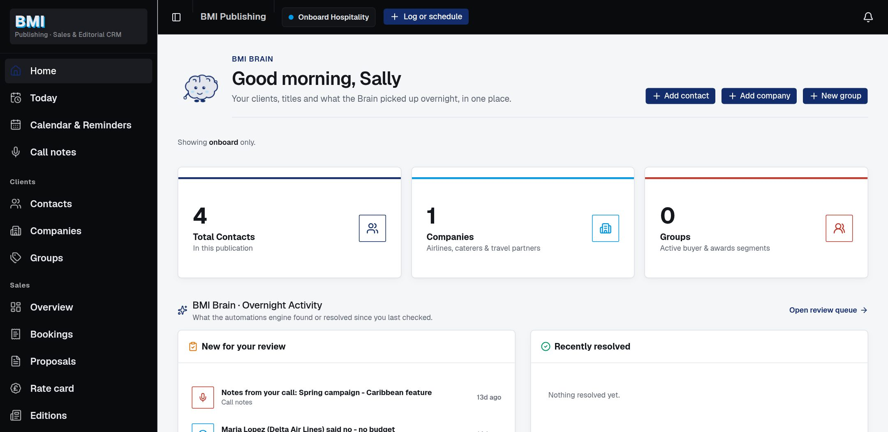
The automations draft emails, spot bounced addresses, find leavers and so on, but nothing goes to a client and no record changes until a person presses the button. Those suggestions wait in the Review Queue.
| # | What to do | Where | What should happen | Result |
|---|---|---|---|---|
| E1 | Sign in with the email and password we sent you. | bmi.rabtaai.com | You land on Home, with your name at the bottom of the menu. | |
| E2 | Connect your Outlook, so emails go from your own mailbox. | Settings›Email Connect Outlook | It says Outlook is connected with your address. | |
| E3 | Find three of your clients by part of a name, an email or a phone number. | Clients›Contacts | They come up straight away. Advanced search lets you combine conditions. | |
| E4 | Ask the Brain a question, e.g. "When did Gate Gourmet last book?" | Ask the Brain bottom right, or Ctrl+J | A plain answer, with links to the records it used. | |
| E5 | Open a guide, e.g. "Make a booking". | Help Centre icon, bottom of the menu | Step-by-step guide with pictures. | |
| E6 | Send us one piece of feedback (even "this works well"). | Feedback bottom right | It appears on the shared Feedback board. |
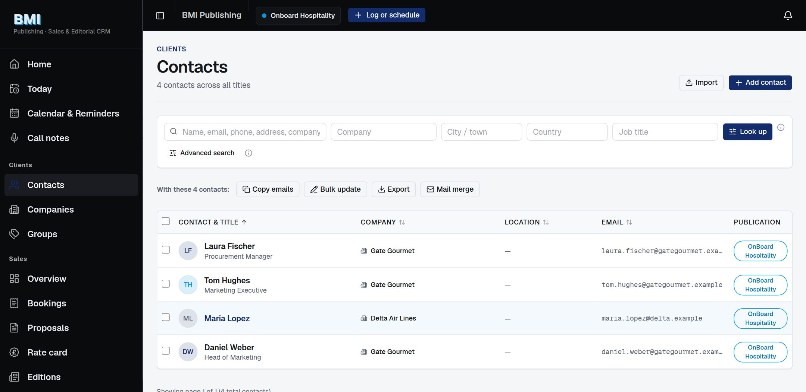
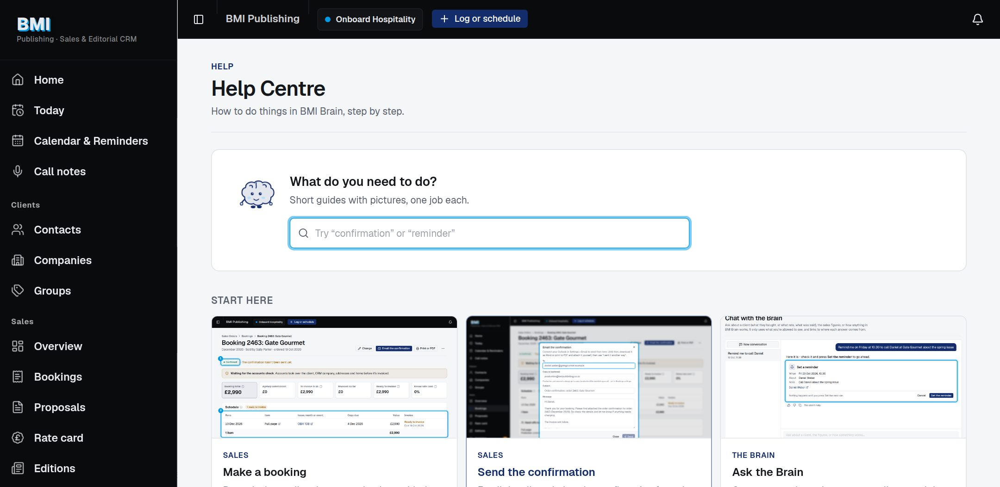
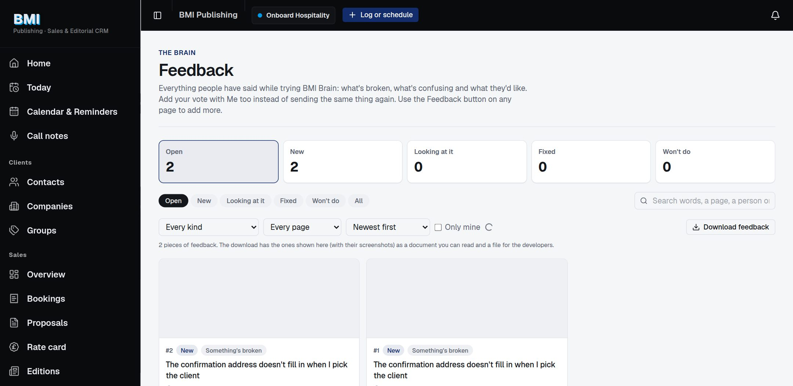
Your day: start on Home (what's new for you) and Today (follow-ups, renewals and budget windows due). Everything about a client is on their company page.
| # | What to do | Where | What should happen | Result |
|---|---|---|---|---|
| S1 | Check Home and Today each morning. | Home Today | Overnight activity and anything due today. Nothing due shows "Nothing due right now". | |
| S2 | Open 10 of your companies. Check notes, history, contacts and bookings against Act!. | Clients›Companies | Same people, notes and history as Act!. | |
| S3 | On those 10, check Who looks after them is right for each magazine. | Company page | You, or the right colleague. Tell us any that are wrong. | |
| S4 | Set a reminder on a contact for next week. | Contact page Remind me | Shows in the amber strip on their page; a notification arrives when due. | |
| S5 | Make a booking: pencil one in, then confirm it. | Sales›Bookings New booking | Prices fill in from the rate card; the booking opens with every item in the Schedule. | |
| S6 | Send the order confirmation to yourself as the client. | Booking Email the confirmation | Email from your Outlook with the confirmation attached; booking says "Confirmation sent". | |
| S7 | Build a proposal for a client and email it to yourself. | Company page Build a proposal | In BMI's template, with issue dates and offers; logged on the client with a follow-up date. | |
| S8 | Look at who hasn't rebooked your titles this year. | Sales›More›Renewals | Last year's advertisers, largest spend first, with New booking beside each. | |
| S9 | Publishers: check your brand's rate card; press Looks right on items marked "Please check". | Sales›Rate card | Prices match the media pack, before VAT. | |
| S10 | Open your commission and check one month against your own figures. | Sales›My commission | Each booking, the rate it earned and why. | |
| S11 | Mail merge a short email to a group, with yourself as one of the people. | Outreach›Mail merge | Each person gets their own email from your Outlook. | |
| S12 | Check your titles' issue dates and deadlines. | Editorial›Editorial plan | Dates and features match the real plan. |
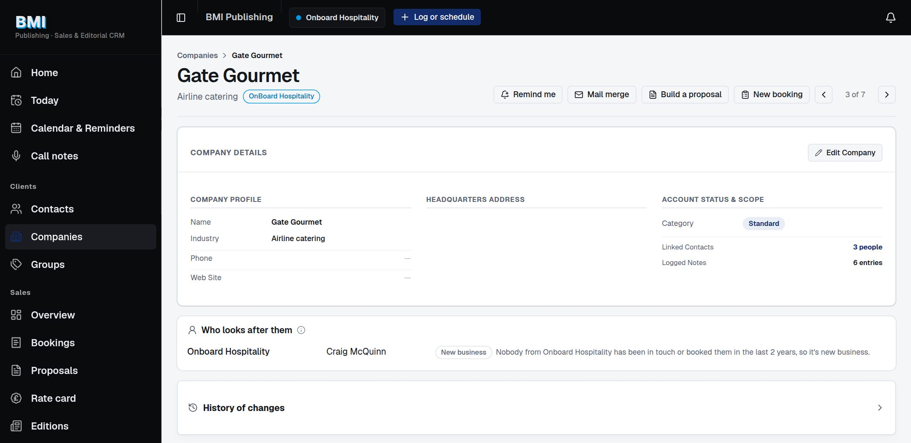
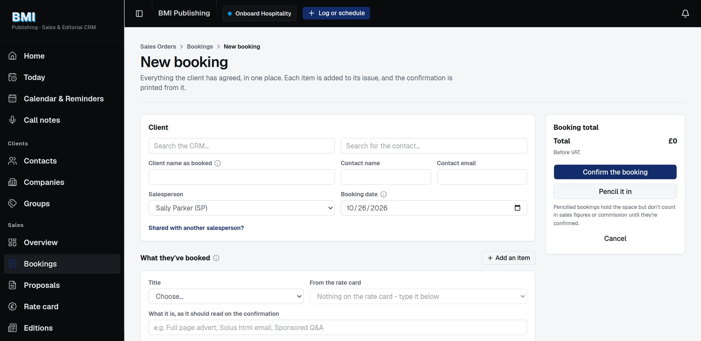
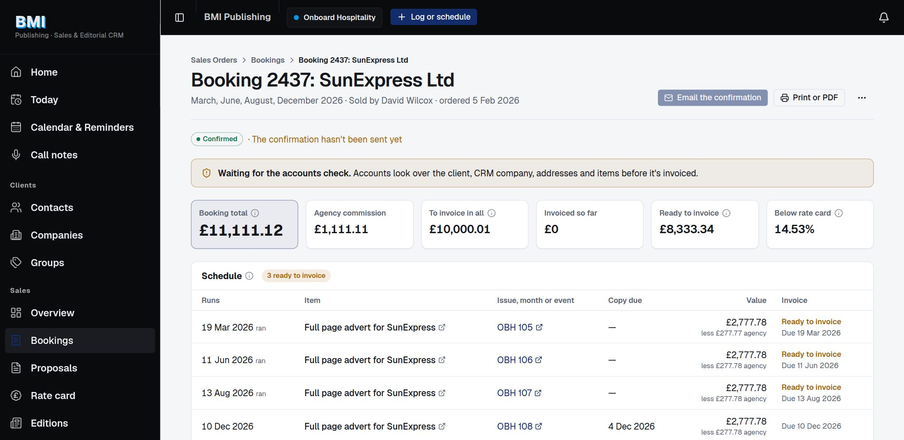
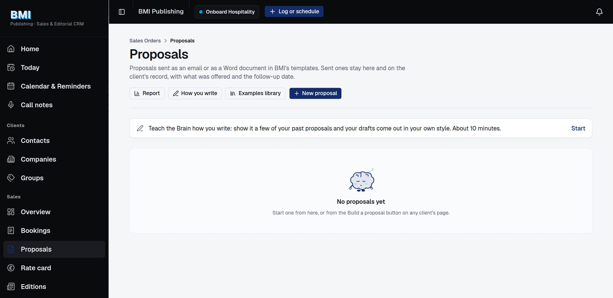
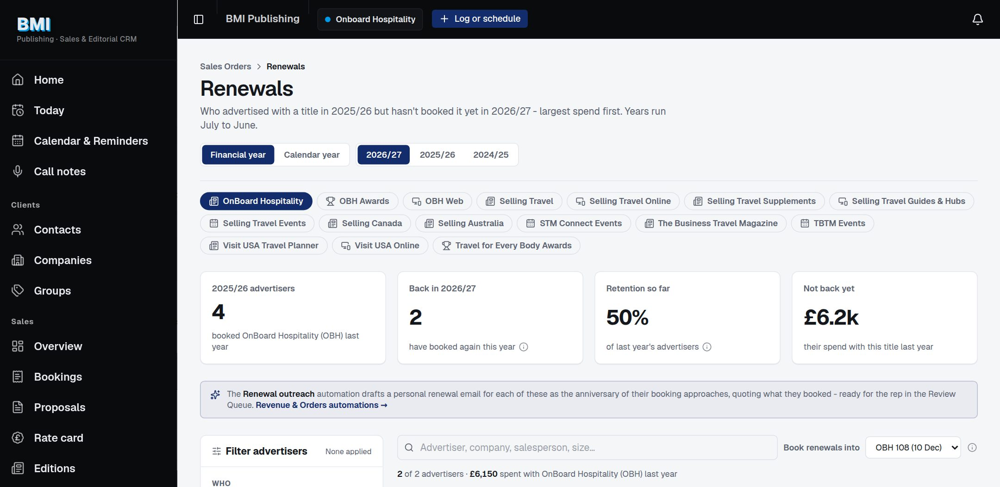
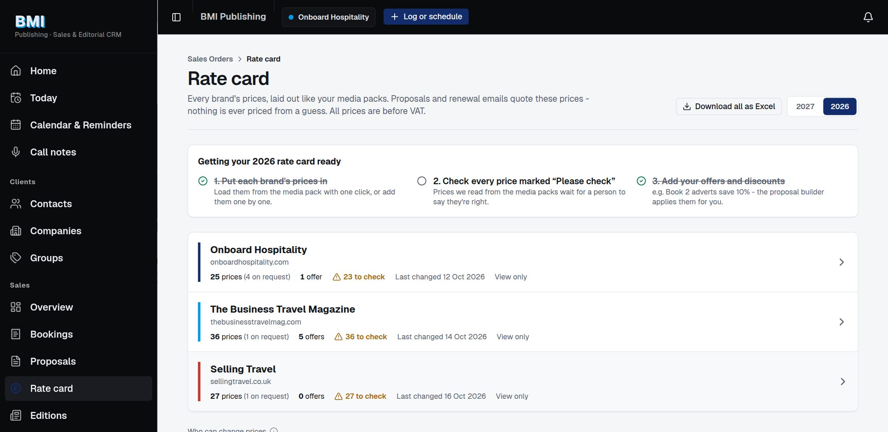
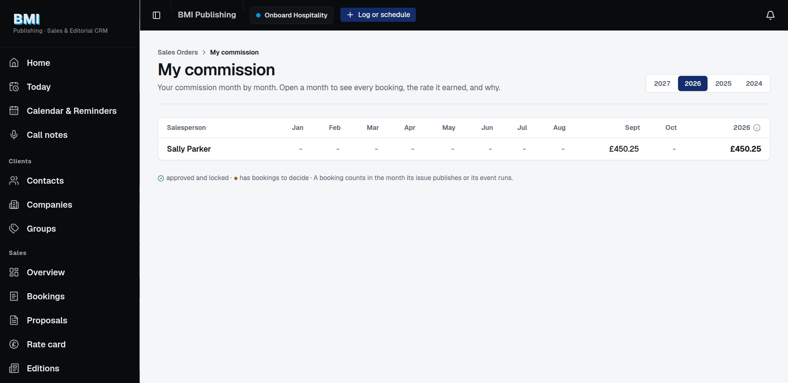
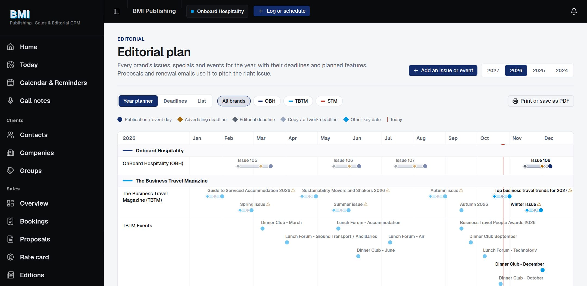
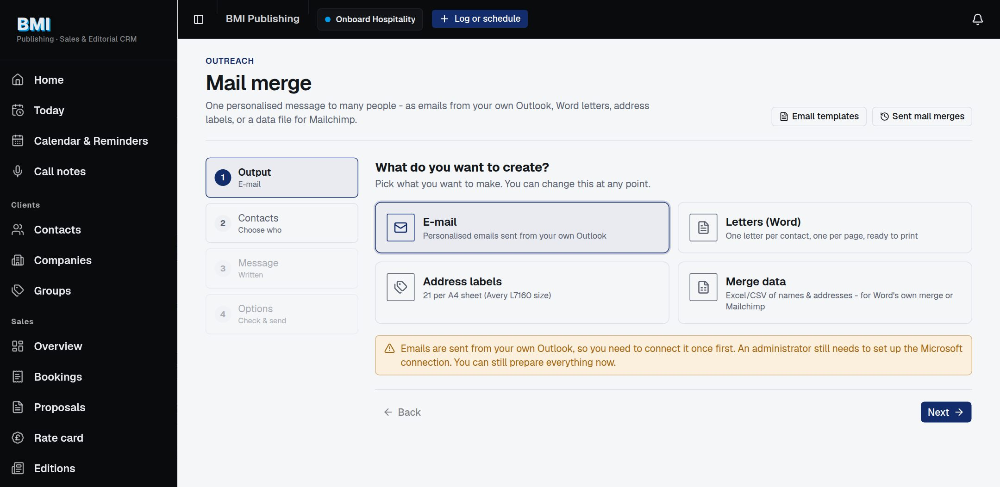
A salesperson's Confirm signs off the sale. Your check is about invoicing: the client, the CRM company, addresses and items are right before an invoice goes out.
| # | What to do | Where | What should happen | Result |
|---|---|---|---|---|
| A1 | Work through the booking checks. | The Brain›Review Queue filter Booking check | Each card links to the booking (opens in a new tab). Looks right or Needs a fix. | |
| A2 | Open a booking that hasn't been checked yet. | Sales›Bookings | Amber note: "Waiting for the accounts check". | |
| A3 | Look at what's overdue and awaiting an invoice; compare five with Xero. | Sales›Invoicing | The same bookings you'd chase from the spreadsheet. | |
| A4 | Create a draft invoice in Xero from a checked booking. | Booking Create the invoice in Xero | A draft appears in Xero with the right contact and codes. Nothing goes to the client. | |
| A5 | Check 10 bookings are linked to the right Xero invoice. | Sales›Invoicing and the booking | Invoice number and amount match Xero. | |
| A6 | Let a salesperson change an invoiced booking, then lock it again. | Booking Unlock for the salesperson | They can change it; it locks again when they save, or press Lock it again. |
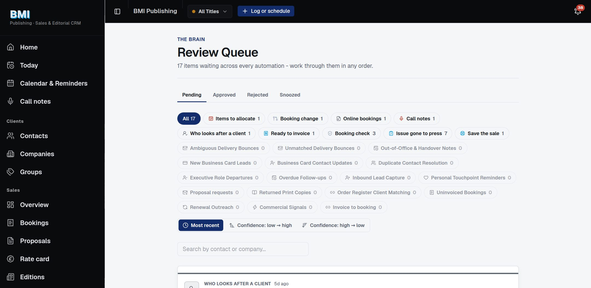
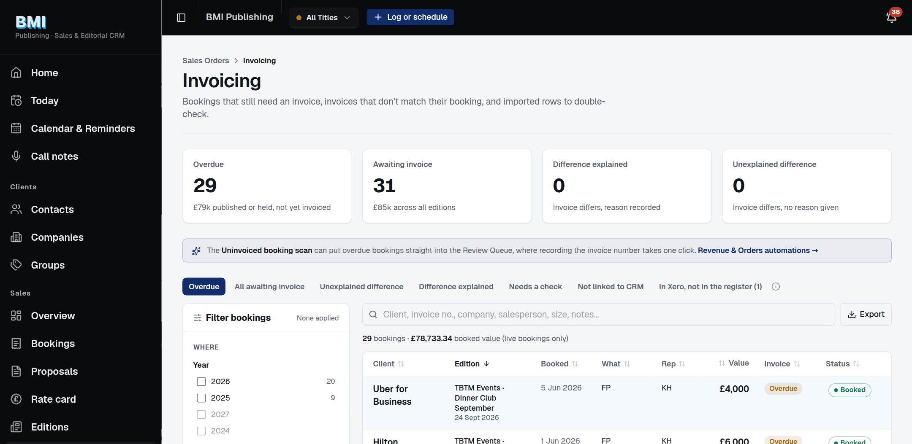
| # | What to do | Where | What should happen | Result |
|---|---|---|---|---|
| M1 | Compare one month's booked and invoiced figures with your own. | Sales›Overview | Same totals. Switch between financial and calendar year. | |
| M2 | Check one month's commission for every salesperson; open one and press Approve this month. | Sales›Commissions | Matches your statement. Plans are under Commission plans. | |
| M3 | Read the weekly summary. | Sales›More›Weekly summary | Figures match the Overview; alerts for editions selling behind last year. | |
| M4 | Answer the "Who looks after a client" questions. | The Brain›Review Queue | Use the suggestion, Someone else or Not now; your answer is kept for good. | |
| M5 | Check costs and profit for one event or issue. | Sales›More›Costs & profit | Sold, costs and profit match your own sums. | |
| M6 | Add a person, set their role and which titles they see; hide a section for a role. | Settings›Team & access and Sections people see | They can sign in and see only what you allowed. | |
| M7 | See which automations are on and what they've done this week. | The Brain›Automations | Each workstream with what's waiting and resolved. |
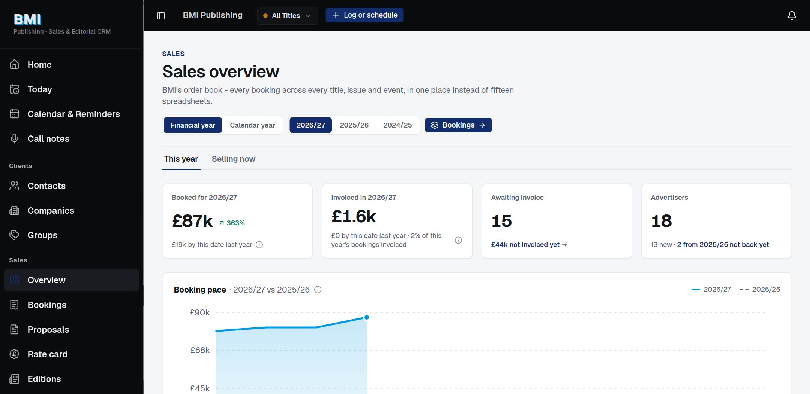
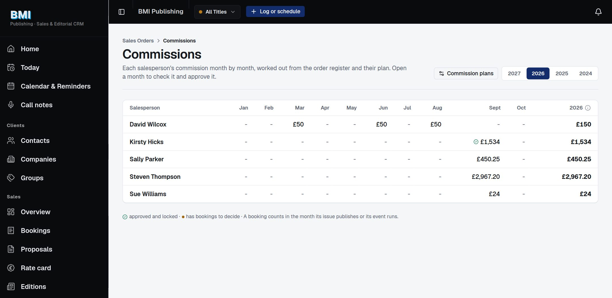
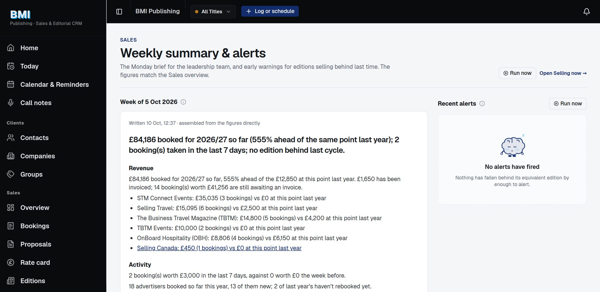
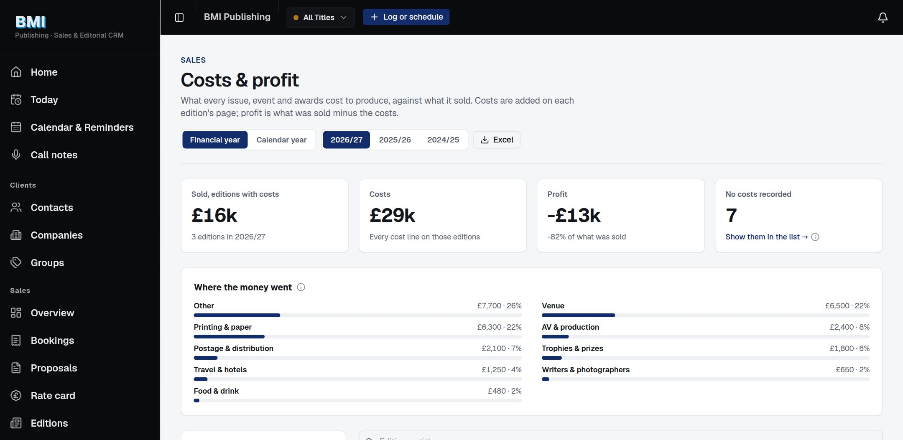
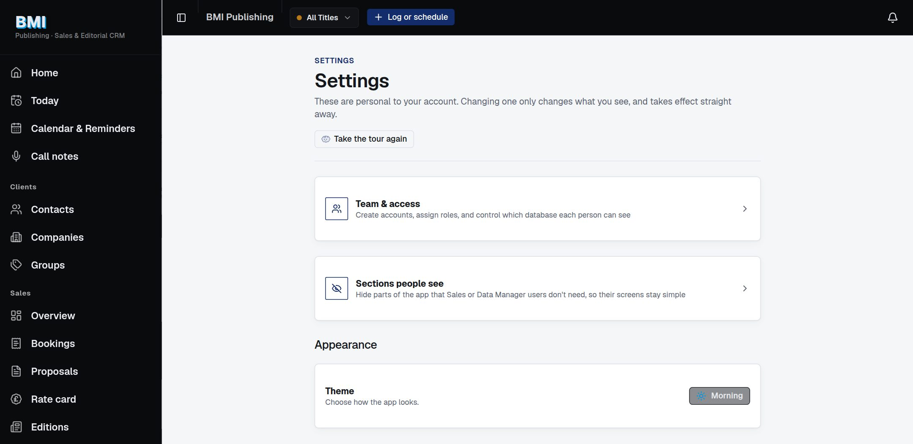
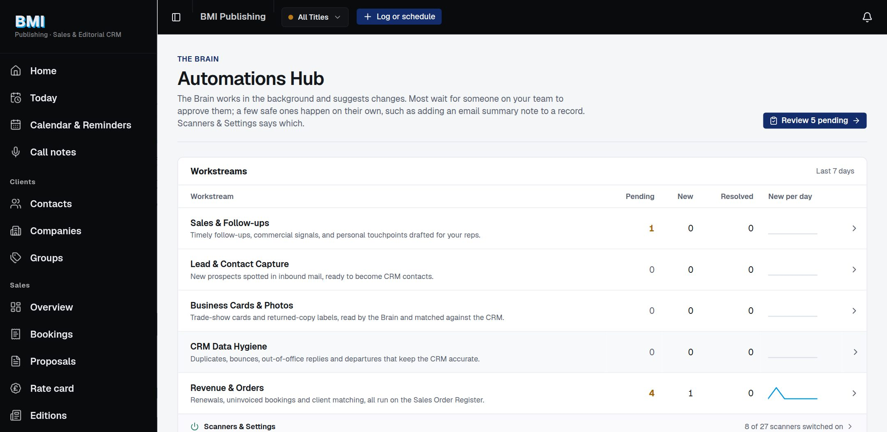
Use the Feedback button at the bottom right of the page where the problem is. It picks up the page you're on and can take a screenshot, which you can draw on. Please say:
Before sending, check the Feedback board: if someone has already reported it, press Me too instead.
| Level | Meaning | We aim to |
|---|---|---|
| Blocker | You can't do the task at all, or money figures are wrong (bookings, invoices, commission). | Fix within 1 working day |
| Major | Wrong or awkward, but there's a way round it. | Fix within the week |
| Minor | Wording, layout or something that looks odd. | Fix before go-live |
| Idea | Works, but could be better, or something new you'd like. | Discuss at a check-in |
Ask the Brain first - it knows the app. Otherwise email ahmed@cybix.ai or raise it at the Tuesday or Thursday check-in.
We'll agree BMI Brain is ready to go live when:
Then we load a fresh copy of the Act! data and the order register, check the totals once more, and switch over.
| Team | Name | Signature | Date |
|---|---|---|---|
| Management | |||
| Sales | |||
| Accounts | |||
| Cybix | Ahmed Ali |